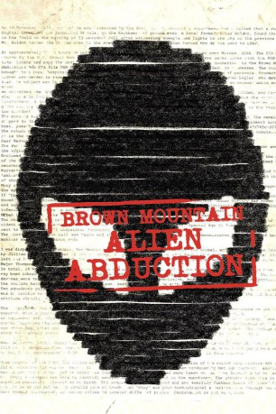

#1720 Brown Mountain - Alien Abduction
Alternativ: Alien Abduction
 
 IMDB-Wertung: 4.9 / 10
IMDB-Wertung: 4.9 / 10  Metascore: 46
Metascore: 46 
Die Gegend am und um den Brown Mountain ist seit Jahrhunderten berüchtigt für seltsame Ereignisse und ist bereits fester Bestandteil von Überlieferungen und Folksongs. Das Ehepaar Morris (Peter Holden und Katherine Sigismund) lässt sich von den Mythen und Legenden rund um das Gebirge nicht beirren und reist mit seinen drei Kindern (Corey Eid, Riley Polanski und Jillian Clare) in die Berge. Nachts erhellen plötzlich merkwürdige Lichterscheinungen die tiefschwarze Nacht, doch die Familie fährt unbeeindruckt am Tag darauf in ihrem Auto durch den dicht bewachsenen Wald. Als sie an einer Tunneleinfahrt Halt machen, entdecken sie zahlreiche, verlassene Autos. Es scheint, als seien die bedauernswerten Insassen in eine Falle gelockt und verschleppt worden. Doch bevor die Morris die Gefahr realisieren können, ist es bereits zu spät…
Jahr: 2014
Dauer: 85 Minuten
FSK: 12
Land: USA Studio: IFC MidnightTonspuren:
Untertitel:
Auflösung: 720p (1280x720) Größe: 2314 MB
Genre: Horror, Sci-Fi, Thriller
Regisseur: Matty Beckerman
Drehbuch: Robert Lewis
Soundtrack: Ben Weinman
Darsteller:
- Katherine Sigismund als Katie Morris
- Corey Eid als Corey Morris
- Jillian Clare als Jillian Morris
- Jeff Bowser als Sean
- Peter Holden als Peter Morris
- Walter Phelan als
- Jordan Turchin als Officer James
- Kelley Hinman als Park Ranger
- Ben Sharples als Agent
- Caleb Moody als Orderly
- Riley Polanski als Riley Morris
- Ronald B. Bishop als Police Officer #2
- Daniel Caton als Himself
- Rick Chambers als Newscaster
- Joshua P. Warren als Himself
Datei: X:\2014(A-F)\Brown Mountain - Alien Abduction (2014, FSK12, 1280x720).mkv seit 10.08.2015
Festplatte: HD 2013(I-Z)-2014(A-Z)
 Es gibt insgesamt 119 Filme in der Gruppe '2014(A-F)'
Es gibt insgesamt 119 Filme in der Gruppe '2014(A-F)'